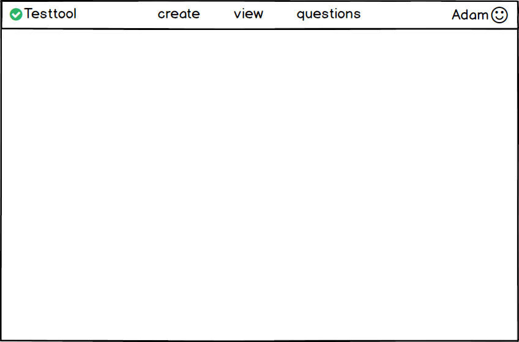
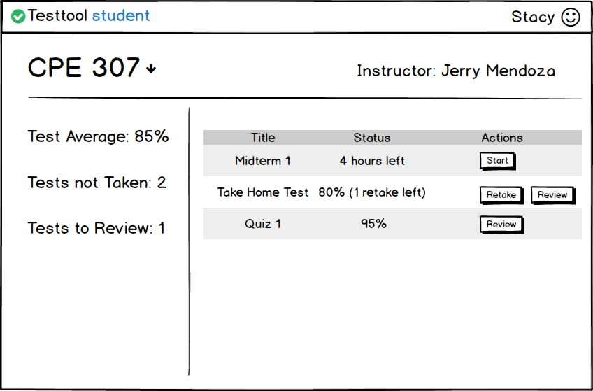

The scenarios in this section show a student user choosing a test to take and taking the test.
When the student logs into their Test Tool loggin ,and are not enrolled in classes, they are taken to the display shown in Figure 2.5.1.

Figure 2.5.1: Student home screen.
Once a student is enrolled in classes they see a list of tests that they have taken or they have to take still. This is shown in Figure 2.5.2.

Figure 2.5.2: Student home screen with tests.
Sketch of the remainder: